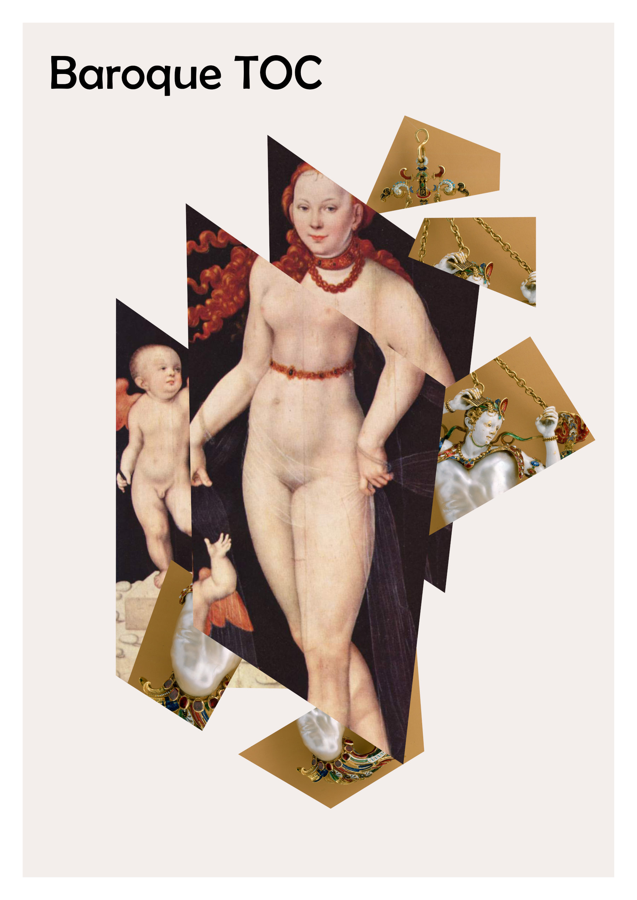

Baroque TOC

Baroque TOC: Automating Exhibition Catalogue Creation
Step-by-step guide: Automating Exhibition Catalogue Creation — A Guide
2023-04-28 v1.0
Description
An exhibition catalogue prototype, created using an open-source computational publishing toolset. The objective was to test automatic retrieval of remote media and linked open data sources and then auto‑typeseting the collated publication as multi‑format. The prototype is available for community reuse to enable others to make their own publications and is accompanied by a step‑by‑step guide.
A collaboration between Open Science Lab TIB, NFDI4Culture, and COPIM:
NFDI4Culture Task Area 4: Which is looking at which initiatives are enhancing their publications for open scholarship. Its aim is to establish a guideline for scholars to create publications and their associated data with a focus on long-term digital preservation.
COPIM’s Computational Book Publishing Pilot Project: WP6 brings together publishers, technologists, researchers, and authors to devise strategies to promote experimental book publishing and the reuse of, and engagement with, open access books.
Cite as
Document DOI: 10.5281/zenodo.7876062

This work is licensed under a Creative Commons Attribution-ShareAlike 4.0 International License.
Book cover: Reworking of Baroque pearl with enamelled gold mounts set with rubies. Creative Commons CC0 1.0 Universal Public Domain Dedication. This file was donated to Wikimedia Commons as part of a project by the Metropolitan Museum of Art. And, Venus and Cupid, Heinrich Bollandt, between circa 1620 and circa 1630. Bavarian State Painting Collections. This work is in the public domain.
{kind=link}
{kind=link}